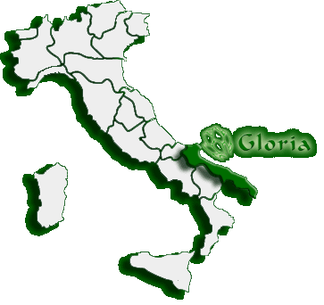

Dove siamo
Scopri come raggiungere la nostra sede
|
Sede Legale |
Stabilimento |

Scarica la cartina zippata ad alta definizione (comprende: Puglia, Basilicata, Molise e Campania)...pronta da stampare!
Cartina 916 Kb >>
Ordona si trova al limite del Tavoliere delle Puglie, dove inizia l' Appennino Dauno.
In automobile: chi proviene dal nord, deve uscire dall'autostrada a Foggia,
proseguire sulla superstrada 655 per Potenza e uscirne alla prima uscita in direzione
Orta Nova, dopo 7 Km. C'è Ordona.
Per chi proviene da Napoli, l'uscita autostradale
è quella di Candela, mentre l'uscita sulla superstrada 655 in direzione Foggia è la
quarta.
Chi, infine, viene dal sud deve uscire a Cerignola, prendere la SS16
verso Foggia, girare per Napoli al bivio con la SS161, Ordona è dopo 10 Km.
In treno: Ordona è a 18 Km. Da Foggia, sulla linea Foggia-Potenza.
Hai domande da farci? Vai alla pagina Contatti >>